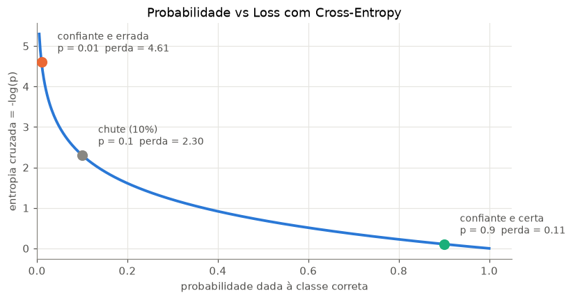
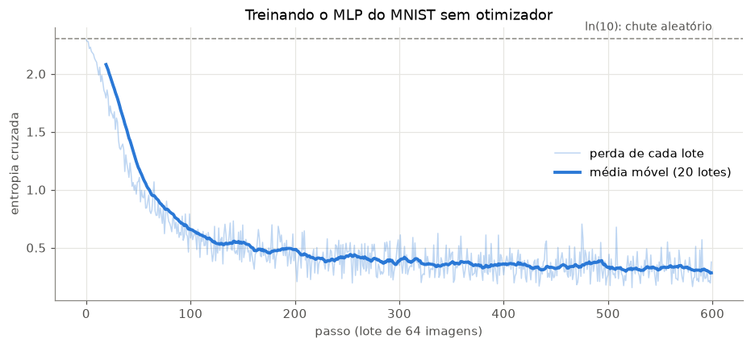
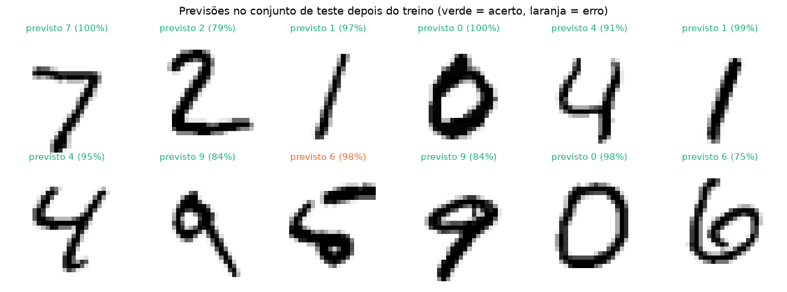

Na aula 1 vimos que uma rede neural é uma função com muitos parâmetros (101.770 no nosso MLP do MNIST) e que, com pesos aleatórios, ela chuta ~10% para cada dígito. Hoje vamos ver como os pesos são ajustados.
O ciclo do aprendizado tem três peças:
Função de perda (loss): um número que mede o quanto a rede está errando
Gradiente: em que direção mexer cada peso para a perda diminuir (calculado pela retropropagação)
Atualização: dar um pequeno passo nessa direção (descida do gradiente)
Repetindo esse ciclo milhares de vezes, a rede aprende.
Code
import numpy as npimport matplotlib.pyplot as pltimport torchimport torch.nn as nnimport torch.nn.functional as Ffrom torchvision import datasets, transformsfrom torch.utils.data import DataLoaderAZUL, LARANJA, VERDE, CINZA, TINTA ="#2a78d6", "#eb6834", "#1baf7a", "#898781", "#52514e"plt.rcParams.update({"axes.spines.top": False, "axes.spines.right": False,"axes.edgecolor": CINZA, "axes.labelcolor": TINTA,"xtick.color": TINTA, "ytick.color": TINTA,"axes.grid": True, "grid.color": "#e6e5e1", "figure.dpi": 110,})torch.manual_seed(42)np.set_printoptions(precision=3, suppress=True)# o mesmo MNIST e o mesmo MLP da aula 1treino = datasets.MNIST(root="data", train=True, download=True, transform=transforms.ToTensor())teste = datasets.MNIST(root="data", train=False, download=True, transform=transforms.ToTensor())def cria_mlp():return nn.Sequential(nn.Flatten(), nn.Linear(784, 128), nn.ReLU(), nn.Linear(128, 10))modelo = cria_mlp()
1. Funções de perda (Loss)
A perda compara a previsão \(\hat{y}\) com o valor verdadeiro \(y\) e devolve um único número: quanto menor, melhor. Treinar a rede é procurar os pesos que deixam a perda mínima.
Regressão: erro quadrático médio (MSE)
Quando a saída é um número contínuo (temperatura, chuva, preço):
erros: [0.5, -0.5, 1.0]
erros ao quadrado: [0.25, 0.25, 1.0]
MSE à mão: 0.5000
nn.MSELoss: 0.5000
Classificação: entropia cruzada (cross-entropy)
Vimos na aula anterior, que com o MNIST dataset, e a nossa MLP, a rede devolve 10 logits, que logo na saída a softmax transforma em probabilidades.
Assim, a entropia cruzada olha só para a probabilidade que a rede deu à classe correta, \(p_{\text{correta}}\):
\[\text{CE} = -\log(p_{\text{correta}})\]
Se a rede dá 100% para a classe certa: \(-\log(1) = 0\), perda zero.
Se dá quase 0% para a classe certa: \(-\log(0{,}001) \approx 6{,}9\), perda enorme.
Vamos calcular à mão para uma imagem e comparar com o PyTorch. No PyTorch, F.cross_entropy recebe os logits diretamente (ele aplica a softmax internamente).
rótulo verdadeiro: 5
probabilidade dada ao dígito 5: 0.1020
CE à mão: -log(0.1020) = 2.2828
F.cross_entropy: 2.2828
Code
p = np.linspace(0.005, 1, 400)fig, ax = plt.subplots(figsize=(8, 4))ax.plot(p, -np.log(p), color=AZUL, lw=2.5)for valor, texto, cor in [(0.9, "confiante e certa", VERDE), (0.1, "chute (10%)", CINZA), (0.01, "confiante e errada", LARANJA)]: ax.scatter(valor, -np.log(valor), s=80, color=cor, zorder=3) ax.annotate(f"{texto}\np = {valor} perda = {-np.log(valor):.2f}", (valor, -np.log(valor)), xytext=(15, 10), textcoords="offset points", color=TINTA, fontsize=9)ax.set(xlabel="probabilidade dada à classe correta", ylabel="entropia cruzada = -log(p)", title="Probabilidade vs Loss com Cross-Entropy", xlim=(0, 1.05))plt.show()

Teste de sanidade: uma rede que ainda não aprendeu nada dá ~10% para cada um dos 10 dígitos, então a perda média deveria ser perto de \(-\log(0{,}1) = \ln(10) \approx 2{,}30\). Se a perda inicial de um modelo for muito diferente disso, alguma coisa está errada no código.
Code
lote_grande =next(iter(DataLoader(treino, batch_size=1000)))x_lote, y_lote = lote_grandewith torch.no_grad(): perda_inicial = F.cross_entropy(modelo(x_lote), y_lote)print(f"perda média da rede não treinada (1000 imagens): {perda_inicial:.3f}")print(f"ln(10) = {np.log(10):.3f}")
perda média da rede não treinada (1000 imagens): 2.298
ln(10) = 2.303
Gradient Descent
Imagine a perda como uma paisagem, em que cada combinação de pesos é um ponto, e a altura é a perda. Queremos chegar ao vale o mais rápido possível. Assim, o gradiente\(\nabla L\) aponta para onde a perda sobe mais rápido. O truque disso, é que vamos apontar no sentido contrário:
\(\eta\) (eta): a taxa de aprendizado (learning rate), o tamanho do passo
Começamos com um único parâmetro e uma perda simples, \(L(\theta) = (\theta - 3)^2\), cujo mínimo está em \(\theta = 3\) e cujo gradiente é \(\nabla L = 2(\theta - 3)\).
η pequeno demais: chega lá, mas devagar (muitos passos = muito tempo de treino).
η bom: chega rápido ao mínimo \(\theta = 3\).
η grande demais: cada passo passa do ponto e cai mais longe do outro lado: a perda explode (divergência).
Em duas dimensões
Uma rede de verdade tem milhares de parâmetros, mas a ideia é a mesma. Com 2 parâmetros dá para desenhar a paisagem como um mapa de curvas de nível. Usamos \(L(\theta_1, \theta_2) = \theta_1^2 + 25\,\theta_2^2\), um vale alongado: muito íngreme na direção \(\theta_2\) e quase plano na direção \(\theta_1\). Paisagens assim são comuns em redes neurais.
Com η pequeno, o caminho é suave mas não chega ao mínimo em 30 passos. Com η maior, ele anda mais rápido em \(\theta_1\) mas faz zigue-zague em \(\theta_2\), a direção íngreme. Não existe um η perfeito para as duas direções ao mesmo tempo. Na aula 3 veremos otimizadores (momentum, Adam) que resolvem isso.
Retropropagação (backpropagation): a regra da cadeia, camada por camada
Para usar a descida do gradiente precisamos de \(\frac{\partial L}{\partial w}\) para cada peso. A retropropagação calcula isso de forma eficiente usando a regra da cadeia: se \(L\) depende de \(\hat{y}\), que depende de \(h\), que depende de \(w\), então
Marcando os pesos com requires_grad=True, o PyTorch registra cada operação do forward pass. Ao chamar L.backward(), ele percorre esse registro de trás para frente aplicando a regra da cadeia, e guarda cada derivada no atributo .grad do peso correspondente. Os números têm que bater com os nossos:
Code
w1_t = torch.tensor(0.5, requires_grad=True)w2_t = torch.tensor(0.8, requires_grad=True)L_t = (w2_t * torch.relu(w1_t * x) - y) **2## aqui ele computa os gradientes de forma automaticaL_t.backward()print(f"∂L/∂w1: à mão = {dL_dw1:.4f} autograd = {w1_t.grad:.4f}")print(f"∂L/∂w2: à mão = {dL_dw2:.4f} autograd = {w2_t.grad:.4f}")
∂L/∂w1: à mão = -0.6400 autograd = -0.6400
∂L/∂w2: à mão = -0.4000 autograd = -0.4000
Os dois gradientes são negativos: aumentar \(w_1\) e \(w_2\) diminui a perda (a previsão 0,8 está abaixo do alvo 1,0). Um passo de descida do gradiente com \(\eta = 0{,}1\):
Code
eta =0.1with torch.no_grad(): # a atualização em si não deve ser registrada pelo autograd w1_t -= eta * w1_t.grad w2_t -= eta * w2_t.grad L_novo = (w2_t * torch.relu(w1_t * x) - y) **2print(f"novos pesos: w1 = {w1_t:.3f}, w2 = {w2_t:.3f}")print(f"perda: {L:.4f} → {L_novo:.4f}")
Um passo, e a perda caiu de 0,04 para ~0,003. Isso é o aprendizado inteiro: forward, perda, backward, atualização. Agora vamos fazer o mesmo com os 101.770 parâmetros do MLP do MNIST.
Treinando o MLP do MNIST na raça
Primeiro, com apenas um único step, forward, perda e backward(). Cada parâmetro da rede ganha um .grad com exatamente o mesmo formato do parâmetro.
Code
torch.manual_seed(0)modelo = cria_mlp()loader = DataLoader(treino, batch_size=64, shuffle=True)x_lote, y_lote =next(iter(loader))perda = F.cross_entropy(modelo(x_lote), y_lote)perda.backward()print(f"perda do lote: {perda.item():.3f}\n")for nome, p in modelo.named_parameters():print(f"{nome:<10} parâmetro {str(tuple(p.shape)):<12} gradiente {str(tuple(p.grad.shape)):<12} |grad| médio = {p.grad.abs().mean():.2e}")
Vimos aqui que os passos fundamentais são: - Calcular o forward pass - Computar o loss - Computar a retropropagação - Atualizar os parâmetros dos pesos
Pronto, isso é exatamente 1 step.
Agora vamos de treino completo, sem nenhum otimizador pronto: só a regra \(\theta \leftarrow \theta - \eta\nabla L\) aplicada a cada parâmetro. Usamos mini-lotes (mini-batches) de 64 imagens: em vez de calcular o gradiente com as 60 mil imagens a cada passo (lento), estimamos com 64 imagens sorteadas. Isso é a descida do gradiente estocástica (SGD).
Dois detalhes importantes:
a atualização fica dentro de torch.no_grad(), para o autograd não registrar a própria atualização;
depois de atualizar, zeramos os gradientes (p.grad.zero_()). Na aula 3 veremos o que acontece se esquecermos.
Code
def acuracia(modelo, dataset, n=10000): x, y =next(iter(DataLoader(dataset, batch_size=n)))with torch.no_grad():return (modelo(x).argmax(dim=1) == y).float().mean().item()torch.manual_seed(0)modelo = cria_mlp()lr =0.1steps =600print(f"acurácia no teste ANTES de treinar: {acuracia(modelo, teste):.1%}")historico = []for passo, (x_lote, y_lote) inenumerate(loader):if passo == steps:break perda = F.cross_entropy(modelo(x_lote), y_lote) # 1. forward + perda perda.backward() # 2. backward: calcula todos os .gradwith torch.no_grad():for p in modelo.parameters(): # 3. atualização: θ ← θ - η·∇L p -= lr * p.grad p.grad.zero_() # 4. zera os gradientes para o próximo passo historico.append(perda.item())print(f"acurácia no teste DEPOIS de {steps} passos: {acuracia(modelo, teste):.1%}")
acurácia no teste ANTES de treinar: 10.4%
acurácia no teste DEPOIS de 600 passos: 91.6%
Code
historico = np.array(historico)media_movel = np.convolve(historico, np.ones(20) /20, mode="valid")fig, ax = plt.subplots(figsize=(10, 4))ax.plot(historico, color=AZUL, alpha=0.3, lw=1, label="perda de cada lote")ax.plot(np.arange(19, len(historico)), media_movel, color=AZUL, lw=2.5, label="média móvel (20 lotes)")ax.axhline(np.log(10), color=CINZA, ls="--", lw=1)ax.text(len(historico), np.log(10) +0.05, "ln(10): chute aleatório", ha="right", va="bottom", color=TINTA, fontsize=9)ax.set(xlabel="passo (lote de 64 imagens)", ylabel="entropia cruzada", title="Treinando o MLP do MNIST sem otimizador")ax.legend(frameon=False)plt.show()

Code
x_ex, y_ex =next(iter(DataLoader(teste, batch_size=12)))with torch.no_grad(): probs_ex = torch.softmax(modelo(x_ex), dim=1)fig, axes = plt.subplots(2, 6, figsize=(12, 4.5))for ax, img, y_true, p inzip(axes.flat, x_ex, y_ex, probs_ex): pred = p.argmax().item() ax.imshow(img[0], cmap="gray_r") ax.set_title(f"previsto {pred} ({p[pred]:.0%})", color=VERDE if pred == y_true else LARANJA, fontsize=10) ax.axis("off")plt.suptitle("Previsões no conjunto de teste depois do treino (verde = acerto, laranja = erro)")plt.tight_layout()plt.show()

Em poucos segundos, a rede saiu de ~10% para ~90% de acerto em imagens que nunca viu. Não usamos nada além de: uma perda, backward() para os gradientes e a regra de atualização escrita à mão.
5. Discussão
A perda transforma “o quanto a rede erra” em um número: MSE para regressão, entropia cruzada para classificação. A perda inicial de um classificador de 10 classes deve ser ≈ ln(10) ≈ 2,30.
A descida do gradiente dá passos contra o gradiente: \(\theta \leftarrow \theta - \eta\nabla L\). A taxa de aprendizado η é o hiperparâmetro mais importante: pequena demais é lenta; grande demais diverge.
A retropropagação é a regra da cadeia aplicada da saída para a entrada. O autograd do PyTorch faz isso com loss.backward() e guarda o resultado em .grad.
Usar mini-lotes (SGD) torna cada passo barato; a perda de cada lote é ruidosa, mas a tendência cai.
Exercícios
Na seção 3, mude \(w_1\) para \(-0{,}5\). O que acontece com \(\frac{\partial L}{\partial w_1}\)? Por quê? (Dica: ReLU.)
No treino do MNIST, teste eta = 0.01 e eta = 2.0. Desenhe as três curvas de perda juntas.
Comente a linha p.grad.zero_() e treine de novo. O que acontece com a perda? Tente explicar antes da aula 3.
Calcule à mão a entropia cruzada de uma rede que dá 50% para a classe correta. E 99%?